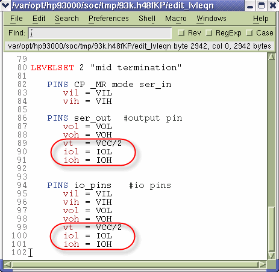
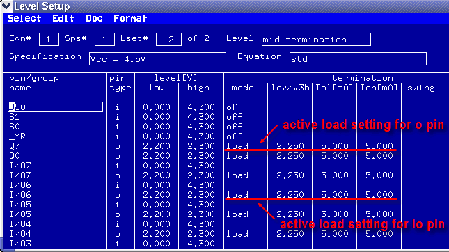

Using the active load for termination
Active loads allow you to achieve better test times, and meet the load conditions for your DUT as specified in the device specification sheet.
About this task
To set the active load level, you need to specify the commutation voltage and the active load currents that the system will use to program the active load.
There are two options:
- Using the Level Equation editor
- Setting the active load directly in the Level Setup window
You can also directly set the active load in the Level Setup window. However, this will result in the inconsistence between the setting in the Level Setup window and the content of the level equation file. See How to restore the equation settings after you change them in the Timing/Level Setup window.
Pin Scale 5000
For the pins of Pin Scale 5000 card, the active load termination is only set for std mode single-ended pins.
Before you begin
Make sure that the Level Setup window is open.
Procedures
Using the Level Equation editor
- In the Level Setup window, choose .
- The Level Equation editor opens. In the level equations, set the commutation voltage and the
active load currents for o pins or io pins:
vt = commutation voltage iol = output low current ioh = output high current

- To download the values in the level equations to the test system hardware, in the Level Equation editor, press F8.
- To verify the result of active load setting, in the Level Setup window, choose .

Setting the active load directly in the Level Setup window
- In the Level Setup window, for the pin of interest, select load in
the termination mode column
- The default value of 2.500V for the commutation voltage is displayed in the termination lev/v3h column.
- The default value of 0.00 mA for both Iol and Ioh are displayed in the termination Iol [mA] and Ioh [mA] columns.
- In the termination lev/v3h column, enter the commutation voltage level.
- In the termination Iol [mA] and Ioh [mA] columns, enter the current values.
Results
In the Level Setup window, the termination mode column shows load and the termination lev/v3h, Iol [mA] and Ioh [mA] columns display the commutation voltage and currents.
Functional changes
- Introduced before SmarTest 6.3.2